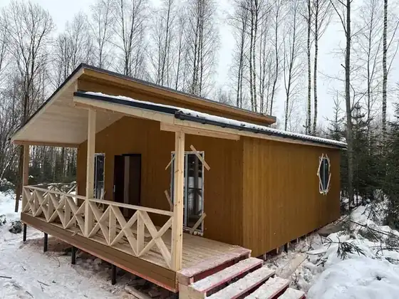

Блок между шапкой и каталогом — 20 вариантов
Каждый вариант в настоящем размере: сверху край первого экрана, снизу начало каталога, в углу высота блока. Тексты — только из договора и страниц сайта.
Советую начать с трёх. 01 — одна мысль и четыре главных страха в одном ряду. 06 — отвечает на то, о чём клиент молчит: «а что, если…». 08 — помогает тому, кто сравнивает компании, и ведёт к договору.
Одна мысль и доказательства
01Каждое обещание — пунктом договора
Каждое обещание — пунктом договора
Прочитать договорСчитаем по смете от 120 позиций и присылаем её до подписания.
Платите за этап, когда приняли его по акту. На каждый платёж — кассовый чек.
До 60 дней с поставки материалов. За нашу просрочку — 0,3 % в день, не больше 10 %.
Обращение рассмотрим за 72 часа, мастер приедет за 14 дней.
02Полоса фактов под первым экраном
- Цена твёрдаяпо смете, п. 2.2
- Договор на сайте14 страниц целиком
- Оплата после приёмкиэтапа по акту
- До 60 днейс поставки материалов
- Гарантия 2 годаответ за 72 часа
03Сначала договор — потом звонок
Сначала прочитайте договор. Потом звоните.
Договор на 14 страниц лежит на сайте целиком — тот самый, который подпишем. Цена, срок, оплата и гарантия в нём — с номерами пунктов.
04Пять цифр, которые можно проверить
Пять цифр, которые можно проверить
Где это записаноОтвет на страх
05Главное — до того, как вы спросите
Главное — до того, как вы спросите
Смету от 120 позиций присылаем до подписания — в ней видна каждая строка.
п. 2.2Оплачиваете этап стройки, когда приняли его по акту, и получаете кассовый чек.
раздел 6, п. 2.6До 60 дней с поставки материалов. За нашу просрочку — 0,3 % в день, не больше 10 %.
п. 5.1 и 7.2Каркас, кровлю и утепление проверяют по чек-листу. Пока этап не принят, дальше не идём.
«Как заказать»06Что будет, если…
Что будет, если…
Пять ситуаций, о которых обычно не спрашивают, — и что на этот случай записано в договоре.
- …материалы подорожаютЦена не изменится, если стройка начнётся в течение 4 месяцев после подписания.п. 2.7
- …мы затянем стройкуЗа каждый день просрочки по нашей вине платим 0,3 % цены договора, но не больше 10 %.п. 7.2
- …при приёмке найдёте недочётЗапишем его в акт и исправим за 5 рабочих дней.п. 6.4
- …после сдачи что-то сломаетсяРассмотрим обращение за 72 часа, мастер приедет за 14 дней. Гарантия — 2 года.п. 7.6 и 7.8
- …не сойдёмся в оценке качестваПозовём независимую экспертизу. Подтвердится наша вина — её оплатим мы.п. 9.4
07Четыре страха — четыре ответа
Четыре страха — четыре ответа
Цена в договоре твёрдая. Допработы — только по допсоглашению, которое вы подписали.п. 2.2 и 2.5
Этап оплачиваете после приёмки по акту, на каждый платёж — кассовый чек.раздел 6, п. 2.6
Технадзор проверяет каркас, кровлю и утепление по чек-листу. Пока этап не принят, дальше не идём.«Как заказать»
Пишете в WhatsApp, Telegram, Max, на почту или звоните. Обращение рассмотрим за 72 часа.п. 7.8
08Спросите любого подрядчика
Сравниваете подрядчиков? Задайте всем пять вопросов
И попросите показать, где ответ записан в договоре. Наши ответы — рядом.
- Цена в договоре твёрдая?Да, считаем её по смете от 120 позиций.п. 2.2
- Когда платить за этап?После приёмки по акту, с кассовым чеком.раздел 6
- Что будет за просрочку?0,3 % цены в день, но не больше 10 %.п. 7.2
- Кто проверяет работу бригады?Технадзор, три приёмки по чек-листу.«Как заказать»
- Сколько ждать мастера по гарантии?До 14 дней, а обращение рассмотрим за 72 часа.п. 7.8
09Что обещаем — и чего не обещаем
Что обещаем — и чего не обещаем
- Твёрдую цену по смете
Смета от 120 позиций — до подписания · п. 2.2
- Срок до 60 дней с поставки материалов
За нашу просрочку — 0,3 % в день, не больше 10 % · п. 5.1, 7.2
- Гарантию 2 года со сроками ответа
Рассмотрим за 72 часа, мастер приедет за 14 дней · п. 7.6, 7.8
- Цену навсегда
Если начало стройки откладывается больше чем на 4 месяца по вашей причине, цену можно пересчитать — только допсоглашением · п. 2.7
- Стройку в любую погоду
Дни, когда работать нельзя без потери качества, фиксируем актом, в срок они не входят · п. 5.3
- Работы сверх договора «заодно»
Любые допработы — только по допсоглашению, с ценой, которую вы видите заранее · п. 2.5
Ценности
10Три правила, по которым мы строим
Три правила, по которым мы строим
Как проходит стройка- Смета от 120 позиций приходит файлом до договора
- Цена в договоре твёрдая — п. 2.2
- Этап стройки оплачиваете после приёмки по акту — раздел 6
- На каждый платёж — кассовый чек — п. 2.6
- Технадзор принимает три этапа по чек-листу
- Приезжайте в офис, на производство или на дом, который строим сейчас
11Тёмная полоса с тремя ценностями
От 120 позиций, каждая отдельной строкой. Цена в договоре твёрдая — п. 2.2.
Этап стройки оплачиваете, когда приняли его по акту. На каждый платёж — чек.
До 60 дней с поставки материалов. Гарантия 2 года, обращение рассмотрим за 72 часа.
12От сметы до ключей
От сметы до ключей
Все 18 шагов- Смета
Считаем дом построчно и присылаем смету до договора
- Выезд инженера
Бурение, грунт и вода — акт обследования остаётся у вас
- Договор
Твёрдая цена и срок до 60 дней с поставки материалов
- Проект и бригада
Конструктивный проект, бригадир разбирает его заранее
- Стройка
Три приёмки технадзора, этап оплачиваете после приёмки
- Ключи
Гарантия 2 года, обращение рассмотрим за 72 часа
13Как устроена оплата
Как устроена оплата
Аванс запускает проект вашего дома. Этапы стройки оплачиваете после приёмки.
- Этап готов
Сообщаем в мессенджере или по телефону
- Вы принимаете
Смотрите работу и подписываете акт или пишете замечания
- Платите
После акта — и сразу получаете кассовый чек
- Следующий этап
Бригада идёт дальше, когда этап принят
Отдельными строками — сваи, окна, покраска, электрика и разводка труб. Окна и покраску оплачивают до поставки: их делают под ваш дом (п. 5.10).
Показать, а не рассказать
14Документы, которые можно открыть до звонка


15Проверьте нас до того, как заплатите
Проверьте нас до того, как заплатите
Бурит пробные скважины, смотрит грунт и воду, выдаёт акт обследования.
Как проходит выездМосква, ул. Адмирала Корнилова, 66, стр. 20. ПН–ВС 11:00–18:00, по записи.
Как добратьсяПосмотрите стройку и поговорите с хозяевами и бригадой.
16Что стоит за ценой дома
Что стоит за ценой дома
Строим по конструктивному проекту и технологическим картам. Вот что это значит на участке.


17Всё, что мы говорим, можно посмотреть


18Фото сданного дома и шесть пунктов

Вместе с домом вы получаете
- Смету построчноот 120 позиций — до подписания
- Твёрдую ценув договоре — п. 2.2
- Проект дома40 000 ₽ уже в цене — п. 2.8
- Три приёмки технадзоракаркас, кровля, утепление
- Срок в договоредо 60 дней с поставки материалов — п. 5.1
- Гарантию 2 годамастер приедет за 14 дней — п. 7.8
Компактные и с действием
19Вкладки по темам
Что записано в договоре — по темам
Цена твёрдая: считаем по смете от 120 позиций и присылаем её до подписания.
п. 2.2Стройка стартует в течение 4 месяцев — подорожание материалов цену не меняет.
п. 2.7Допработы — только по допсоглашению, которое вы подписали.
п. 2.5Этап стройки оплачиваете после приёмки по акту.
раздел 6На каждый платёж — кассовый чек.
п. 2.6Окна и покраску оплачивают до поставки: их делают под ваш дом.
п. 5.10До 60 дней с поставки материалов.
п. 5.1За нашу просрочку — 0,3 % цены в день, не больше 10 %.
п. 7.2Бригада назначена заранее и живёт на участке или рядом.
«Как заказать»Технадзор принимает каркас, кровлю и утепление по чек-листу.
«Как заказать»Недочёты, найденные при приёмке, исправляем за 5 рабочих дней.
п. 6.4Спорим о качестве — зовём независимую экспертизу. При нашей вине платим за неё мы.
п. 9.4Гарантия 2 года: окна, кровля, каркас, утеплитель и ещё пять строк.
п. 7.6Обращение рассмотрим за 72 часа, мастер приедет за 14 дней, устраним за 30.
п. 7.8Отказ — только письменно, с причиной и пунктом договора.
п. 7.820Лента из шести ценностей
Что для нас важно в каждой стройке
Смета от 120 позиций до подписания, цена в договоре твёрдая.
п. 2.2Этап оплачиваете после приёмки по акту, на каждый платёж — чек.
раздел 6, п. 2.6До 60 дней с поставки материалов. За нашу просрочку — 0,3 % в день, не больше 10 %.
п. 5.1 и 7.2Технадзор принимает три этапа по чек-листу. Пока этап не принят, дальше не идём.
«Как заказать»Обращение по гарантии рассмотрим за 72 часа, мастер приедет за 14 дней.
п. 7.8Договор на сайте целиком. В офис, на производство и на стройку можно приехать.
«Договор», главная